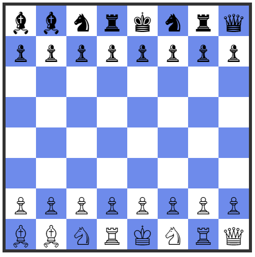

Quest Problems
These are selected problems from the APL Quest that exercise concepts especially important for beginners and used by APL practitioners in almost all domains.
2013-2: Put It In Reverse
The find function X⍷Y identifies the beginnings of occurrences of array X in array Y.
In this problem, you're asked to return a result that identifies the endings of occurrences of array X in array Y. To keep things simple, X and Y will be at most rank 1, meaning they'll either be vectors or scalars.
Write a function that:
- takes a scalar or vector left argument
- takes a scalar or vector right argument
- returns a Boolean result that is the same shape as the right argument where 1's mark the ends of occurrences of the left argument in the right argument
Hint: The find function ⍷ and reverse function ⌽ could be helpful in solving this problem.
Examples
'abra' (<i>your_function</i>) 'abracadabra'
0 0 0 1 0 0 0 0 0 0 1
'issi' (<i>your_function</i>) 'Mississippi'
0 0 0 0 1 0 0 1 0 0 0
'bb' (<i>your_function</i>) 'bbb bbb'
0 1 1 0 0 1 1
(,42) (<i>your_function</i>) 42
0
42 (<i>your_function</i>) 42
1
(,42) (<i>your_function</i>) ,42
1
'are' 'aquatic' (<i>your_function</i>) 'ducks' 'are' 'aquatic' 'avians'
0 0 1 0
2014-2: How Tweet It Is
Twitter messages have a 140 character limit; what if the limit was even shorter? One way to shorten the message yet retain most readability is to remove interior vowels from its words. Write a dfn which takes a character vector and removes the interior vowels from each word.
Examples
(your_function) 'if you can read this, it worked!'
if yu cn rd ths, it wrkd!
(your_function) 'APL is REALLY cool'
APL is RLLY cl
(your_function) '' ⍝ an empty vector arg should return an empty vector
(your_function) 'a' ⍝ should work with a single character message
a
2023-6: Key/Value Pairs
Representing data as key/value pairs (also known as name/value pairs) is a very common technique. For example, it can be found in query strings in HTTP URIs, attribute settings in HTML elements, and in JSON objects. One common representation for a key/value pair is to have a character key (name) followed by an equals sign (=) followed by the value. Multiple key/value pairs can be separated by a delimiter character or characters. For example:
key1=value1;key2=value2
Write a function that:
- takes a 2-element character vector left argument where the first element represents the separator character between multiple key/value pairs and the second element represents the separator between the key and the value for each pair.
- takes a character vector right argument representing a valid set of key/value pairs (delimited as specified by the left argument).
- returns a 2-column matrix where the first column contains the character vector keys of the key/value pairs and the second column contains the character vector values.
Note: You may assume that there will be no empty names or values in the right argument.
Hint: The partition function ⊆ could be helpful in solving this problem.
Examples
⍴ ⎕← ' ='(<i>your_function</i>)'language=APL dialect=Dyalog'
┌────────┬──────┐
│language│APL │
├────────┼──────┤
│dialect │Dyalog│
└────────┴──────┘
2 2
⍴ ⎕← ';:'(<i>your_function</i>)'duck:donald'
┌────┬──────┐
│duck│donald│
└────┴──────┘
1 2
⍴ ⎕← '/:'(<i>your_function</i>)'name:Morten/name:Brian/name:Adám'
┌────┬──────┐
│name│Morten│
├────┼──────┤
│name│Brian │
├────┼──────┤
│name│Adám │
└────┴──────┘
3 2
2022-6: Pyramid Scheme
Write a monadic function that:
- takes an argument n that is an integer scalar in the range 0-100.
- returns a square matrix "pyramid" with 0⌈¯1+2×n rows and columns of n increasing concentric levels.
By this we mean that the center element of the matrix will be n, surrounded on all sides by n-1.
Hint: The functions minimum X⌊Y and reverse ⌽Y, and the outer product operator X∘.gY could be helpful.
Examples
(<i>your_function</i>) 3
1 1 1 1 1
1 2 2 2 1
1 2 3 2 1
1 2 2 2 1
1 1 1 1 1
(<i>your_function</i>) 5
1 1 1 1 1 1 1 1 1
1 2 2 2 2 2 2 2 1
1 2 3 3 3 3 3 2 1
1 2 3 4 4 4 3 2 1
1 2 3 4 5 4 3 2 1
1 2 3 4 4 4 3 2 1
1 2 3 3 3 3 3 2 1
1 2 2 2 2 2 2 2 1
1 1 1 1 1 1 1 1 1
(<i>your_function</i>) 1 ⍝ should return 1 1⍴1
1
(<i>your_function</i>) 0 ⍝ should return 0 0⍴0
2021-2: Index-Of Modified
Write a function that behaves like the APL index-of function R←X⍳Y except that it returns 0 instead of 1+≢X for elements of Y not found in X.
Examples
'DYALOG' (your_function) 'APL'
3 0 4
(5 5⍴⎕A) (your_function) ↑'UVWXY' 'FGHIJ' 'XYZZY'
5 2 0
2021-6: Fischer Random Chess

According to Wikipedia, Fischer random chess is a variation of the game of chess invented by former world chess champion Bobby Fischer. Fischer random chess employs the same board and pieces as standard chess, but the starting position of the non-pawn pieces on the players' home ranks is randomized, following certain rules. White's non-pawn pieces are placed on the first rank according to the following rules:
- The Bishops must be placed on opposite-color squares.
- The King must be placed on a square between the rooks.
The good news is that you don't actually need to know anything about chess to solve this problem! We'll use strings whose elements are 'KQRRBBNN' for the King (♔), Queen (♕), 2 Rooks (♖), 2 Bishops (♗), and 2 kNights (♘) respectively.
Write a function that:
- has a character vector right argument that is a permutation of 'KQRRBBNN'
- returns 1 if the following are true:
- the K is between the two Rs
- the Bs occupy one odd and one even position
💡 Hint: The where function ⍸Y and the residue function X|Y could help with solving this problem.
Examples
(your_function) 'RNBQKBNR' ⍝ standard chess layout
1
(your_function) 'BBNRKNRQ' ⍝ layout in diagram above
1
(your_function) 'RBBNQNRK' ⍝ K not between Rs
0
(your_function) 'BRBKRNQN' ⍝ Bs both in odd positions
0
2021-7: Can You Feel the Magic?

Wikipedia states that, in recreational mathematics, a square array of numbers, usually positive integers, is called a magic square if the sums of the numbers in each row, each column, and both main diagonals are the same.
Write a function to test whether an array is a magic square. The function must:
- have a right argument that is a square matrix of integers (not necessarily all positive integers)
- return 1 if the array represents a magic square, otherwise return 0
💡 Hint: The dyadic transpose X⍉Y function could be helpful for solving this problem.
Examples
(your_function) 1 1⍴42
1
(your_function) 3 3⍴4 9 2 3 5 7 8 1 6
1
(your_function) 2 2⍴1 2 3 4
0
2021-10: On the Right Side
Write a function that:
- has a right argument T that is a character scalar, vector or a vector of character vectors/scalars.
- has a left argument W that is a positive integer specifying the width of the result.
- returns a right-aligned character array R of shape ((2=|≡T)/≢T),W meaning R is one of the following:
- a W-wide vector if T is a simple vector or scalar.
- a W-wide matrix with the same number rows as elements of T if T is a vector of vectors/scalars.
- if an element of T has length greater than W, truncate it after W characters.
💡 Hint: Your solution might make use of take X ↑ Y.
Examples
In these examples, ⍴⎕← is inserted to display first the result and then its shape.
⍴⎕←6 (your_function) '⍒'
⍒
6
⍴⎕←8 (your_function) 'K' 'E' 'Iverson'
K
E
Iverson
3 8
⍴⎕←10 (your_function) 'Parade'
Parade
10
⍴⎕←8 (your_function) 'Longer Phrase' 'APL' 'Parade'
r Phrase
APL
Parade
3 8
starsForSpaces←'*'@(=∘' ')
starsForSpaces 6 (your_function) '⍒'
*****⍒
2019-2: Making the Grade
|
Write a function that, given an array of integer test scores in the inclusive range 0–100, returns an identically-shaped array of the corresponding letter grades according to the table to the left. |
💡 Hint: You may want to investigate the interval index function X⍸Y.
Examples
(your_function) 0 64 65 69 70 79 80 89 90 100
FFDDCCBBAA
(your_function) ⍬ ⍝ returns an empty vector
(your_function) 2 3⍴71 82 81 82 84 59
CBB
BBF
2019-5: Doubling Up
Given a word or a list of words, return a Boolean vector where 1 indicates a word with one or more consecutive duplicated, case-sensitive, letters. Each word will have at least one letter and will consist entirely of either uppercase (A–Z) or lowercase (a–z) letters. Words consisting of a single letter can be scalars.
💡 Hint: The nest function ⊆Y could be useful.
Examples
(your_function) 'I' 'feed' 'the' 'bookkeeper'
0 1 0 1
(your_function) 'I'
0
(your_function) 'feed'
1
(your_function) 'MY' 'LLAMAS' 'HAVE' 'BEEN' 'GOOD'
0 1 0 1 1
2019-6: Telephone Names
|
Some telephone keypads have letters of the alphabet embossed on their keytops. Some people like to remember phone numbers by converting them to an alphanumeric form using one of the letters on the corresponding key. For example, in the keypad shown, 'ALSMITH' would correspond to the number 257-6484 and '1DYALOGBEST' would correspond to 1-392-564-2378.
|
Write an APL function that takes a character vector right argument that consists of digits and uppercase letters and returns an integer vector of the corresponding digits on the keypad.
💡 Hint: Your solution might make use of the membership function X∊Y.
Examples
(your_function) 'IAMYY4U'
4 2 6 9 9 4 8
(your_function) '' ⍝ should return an empty vector
(your_function) 'UR2CUTE'
8 7 2 2 8 8 3
2018-3: Rolling Along
Using the key operator ⌸, write an APL expression that, given an integer scalar or vector representing the number of sides on each of a set of dice, will return a histogram showing the distribution curve for the possible totals that can be rolled using those dice. The histogram is a 2-column matrix where the left column contains the possible totals for the dice, and the right column has vectors containing asterisks representing the number of occurrences of the corresponding totals. Trailing spaces are allowed in the character vectors.
Note: If you have ]boxing on then the result will look different.
Examples:
your_function 6 6 ⍝ 2 6-sided dice
2 *
3 **
4 ***
5 ****
6 *****
7 ******
8 *****
9 ****
10 ***
11 **
12 *
your_function 6 ⍝ 1 6-sided die (flat distribution)
1 *
2 *
3 *
4 *
5 *
6 *
your_function 5 3 4 ⍝ 5, 3, and 4-sided dice
3 *
4 ***
5 ******
6 *********
7 ***********
8 ***********
9 *********
10 ******
11 ***
12 *
your_function ⍬ ⍝ no dice
0 *
2018-4: What's Your Sign?
The Chinese animal zodiac is a repeating cycle of 12 years, with each year being represented by an animal. 2018 is the year of the dog. The signs for the last 12 years are:
| 2018 | Dog | 2012 | Dragon | |
|---|---|---|---|---|
| 2017 | Rooster | 2011 | Rabbit | |
| 2016 | Monkey | 2010 | Tiger | |
| 2015 | Goat | 2009 | Ox | |
| 2014 | Horse | 2008 | Rat | |
| 2013 | Snake | 2007 | Pig |
Note that the year 1 AD (represented as 1) follows the year 1 BC (represented as ¯1) with no intervening "0" year.
Write an APL expression that, given a scalar integer year, returns a character vector (string) of the Chinese zodiac sign for that year. For the purposes of this problem, assume that each year number corresponds to exactly one Chinese zodiac animal.
Examples:
your_function 2018 ⍝ Newborns this year will be Dogs
Dog
your_function 1564 ⍝ William Shakespeare b. 1564
Rat
your_function ¯551 ⍝ Confucius b. 551 BC
Dog
2018-5: What's Your Sign? Revisited
In Western astrology, the Zodiac is based on twelve 30° sectors of the ecliptic. Although the exact dates in a given year may shift by a day, the general dates for each sign are:
| Aries | March 21–April 19 | Libra | September 23–October 22 |
|---|---|---|---|
| Taurus | April 20–May 20 | Scorpio | October 23–November 21 |
| Gemini | May 21–June 20 | Sagittarius | November 22–December 21 |
| Cancer | June 21–July 22 | Capricorn | December 22–January 19 |
| Leo | July 23–August 22 | Aquarius | January 20–February 18 |
| Virgo | August 23–September 22 | Pisces | February 19–March 20 |
Write an APL expression that, given a 2-element integer vector representing month and day, returns a character vector (string) of the corresponding Western zodiac sign.
Examples:
your_function 2 23 ⍝ February 23
Pisces
your_function 10 31 ⍝ October 31
Scorpio
2018-10: Anagrammatically Correct
An anagram is a word or phrase that can be formed by rearranging the letters of another. For instance, 'stained' and 'instead' are anagrams, as are 'emigrants' and 'streaming'. Spaces are not considered significant in the comparison.
Write an APL expression that takes left and right arguments of character scalars or vectors returns a 1 if the arguments are anagrams of one another, 0 otherwise. You may assume that both arguments are both either upper-case or lower-case.
Examples:
'ALBERT EINSTEIN' your_function 'TEN ELITE BRAINS'
1
'' your_function ''
1
'd' your_function 'd'
1
'mesas' your_function 'seam'
0
'apple' your_function 'lapel'
0
2016-4: Just Meshing Around
Write a function that takes vectors as its left and right arguments and returns them "meshed" into a single vector formed by alternately taking successive elements from each argument. The arguments do not have to be the same length.
Examples:
'MENS' your_function 'EKES'
MEEKNESS
'Dyalog' your_function 'APL'
DAyPaLlog
'APL' your_function 'Dyalog'
ADPyLalog
1 3 5 7 your_function 2 4 6 8 ⍝ should work with numeric vectors
1 2 3 4 5 6 7 8
'' your_function 'Hello' ⍝ either or both arguments could be empty
Hello
2016-6: Shorter Ones to the Front
Write a function that takes a vector of vectors as its right argument and returns it sorted by the length of each element. An element of the vector can be scalar or an empty vector.
Examples:
your_function 'one' 'two' 'three' 'four' 'five' 'six'
┌───┬───┬───┬────┬────┬─────┐
│one│two│six│four│five│three│
└───┴───┴───┴────┴────┴─────┘
your_function (2 4 3) (4 5) 1 (7 3)
┌─┬───┬───┬─────┐
│1│4 5│7 3│2 4 3│
└─┴───┴───┴─────┘
your_function ⍬ ⍝ should return an empty vector
your_function 'one' 2 'three' '' 'four' (5 6 7 8)
┌┬─┬───┬────┬───────┬─────┐
││2│one│four│5 6 7 8│three│
└┴─┴───┴────┴───────┴─────┘